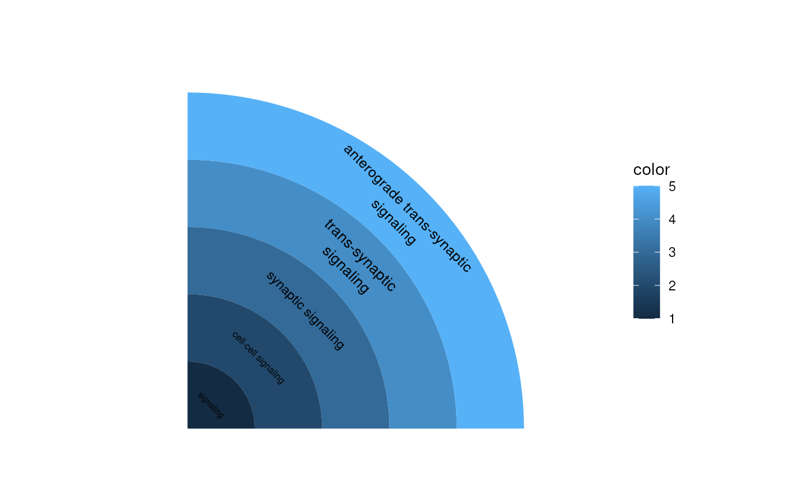

Creates sunburst diagram using ggplot2.
ggSunburst(
plotdata,
fontsize = 1,
rotate90 = NULL,
maxCharacters = 30,
legendTitle = "color",
start = 0,
end = NULL,
clip = "off",
expand = FALSE,
...
)A data.frame.
Default fontsize.
Rotate the labels 90 degree or not. Default NULL will try to auto rotate the labels according the space.
Maximal number of characters for labels
The title of the legend.
Offset of starting or ending point from 12 o'clock in radians. see coord_radial.
Should drawing be clipped to the extent of the plot panel? Default "on" means yes.
If TRUE, adds a small expansion factor the the limits to prevent overlap between data and axes. If FALSE, the default, limits are taken directly from the scale.
Other parameters (except theta) passed to coord_radial.
A ggplot object
plotdata <- data.frame(
id=c('GO:0023052', 'GO:0007267', 'GO:0099536', 'GO:0099537', 'GO:0098916'),
x=0.5,
y=seq.int(5),
xmin=0,
ymin=c(0.5, 1.5, 2.5, 3.5, 4.5),
xmax=1,
ymax=c(1.5, 2.5, 3.5, 4.5, 5.5),
fill=seq(1, 5),
label=c('signaling', 'cell-cell signaling', 'synaptic signaling',
'trans-synaptic signaling', 'anterograde trans-synaptic signaling')
)
ggSunburst(plotdata, end=pi/2)
